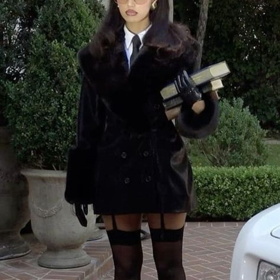

On The Blog M A T C H I | Website Exclusive | November 20, 2024

The "dark feminine" aesthetic is a fashion trend that blends elements of edginess, mystery, and elegance, often associated with a gothic or noir style, while maintaining a distinctly feminine allure. This look has been gaining popularity on platforms like Instagram and TikTok, where individuals embrace the juxtaposition of dark, dramatic clothing with soft, sensual details.
Influences and Style Icons: The dark feminine aesthetic is influenced by goth and Victorian-inspired fashion, but it also pulls from high fashion and alternative subcultures. Icons like Morticia Addams (from The Addams Family), models such as Bella Hadid, and various vintage movie stars, who exude elegance mixed with an air of darkness, are often cited as inspiration.
. ___________________________________________________________________________________________________________________________________________________________________________________________________________________________________________________________________________________________________________________________________________ .

With her intense roles and humanitarian efforts, Angelina Jolie has always been a figure of strength and mystery. Her dedication to global causes, combined with her captivating beauty, makes her a force to be reckoned with. Much like Angelina Jolie's powerful presence, the dark feminine outfit trend exudes a sense of strength, elegance, and mystery. Characterized by deep, moody colors like black and rich burgundy, this style channels a sense of allure and sophistication.
The use of luxurious fabrics such as velvet, lace, and leather adds depth, combining femininity with an air of edginess. The dark feminine aesthetic embraces a balance between grace and power, much like Jolie’s own persona, making it the perfect reflection of modern women who want to exude confidence and subtle sensuality. This trend celebrates bold silhouettes, dramatic accessories, and a daring approach to beauty, drawing inspiration from gothic and vintage influences, while remaining undeniably chic.
The dark feminine outfit trend also emphasizes empowerment through fashion, much like the way Angelina Jolie commands attention both on-screen and in her humanitarian work. This aesthetic allows women to embrace their inner strength while maintaining a sense of mystery and sophistication. From flowing dresses with dramatic details to tailored leather jackets and lace accents, dark feminine fashion speaks to those who want to exude an aura of confidence and allure. Accessories like silver chokers, statement rings, and wide-brimmed hats add an extra layer of intrigue, making the look both captivating and unforgettable. It's a bold yet elegant expression of femininity that challenges traditional norms, celebrating individuality and the power of embracing one’s darker, more mysterious side.